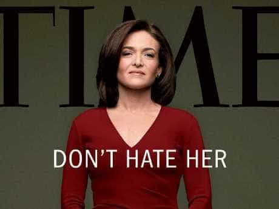

< < < Back
Don’t Work For A Female Boss – Return Of Kings
My worst experiences in the professional world all share one thing in common: I reported to a female boss. Talk to most guys (and, frankly, normal women) and they will say the same thing—working for a female boss, or in an environment composed of mostly women, is a descent into an endless abyss of back-biting, passive-aggressiveness, lies, envy, intrigue, subterfuge, manipulation, and drama.
This should come as no surprise. Male leadership—though this is decreasingly the case—is characterized by traits that come naturally to men; things like leading by example, commanding respect through body language and presence, and reason. Female bosses, meanwhile, tend to break into two different camps: those who try to pantomime male leadership and those who fall back on female-style social dynamics in their leadership. Each results in its own brand of shit show.
Female Social Dynamics Leadership
Female-style social dynamics are basically the same tableaux you saw in the hallways of your middle- and high-school, but grafted onto the corporate environment and acted out by adults. Women (and effeminate men) will break into cliques, gossip about everyone, and try to undermine one another, all with a smile on their face and a stream of disingenuous compliments flowing from their mouths.
If, as a masculine guy, you get caught up in this, rest-assured that you’ll quickly be associated with one clique and live and die by that association. Meanwhile, your so-called friends won’t have your back because: (1) women (and manginas) are firmly disloyal and; (2) you’ll always be, as a manly dude, thought of as that much more of an outsider. Female leaders not only fail to put a stop to this type of environment, they actively encourage it and participate in it.
I’ll never forget the time—while working in a corporate department where the male-to-fatty ratio was 3:19—I came into the office to find that a new assistant had been hired. The new girl was as hot as her half-Colombian, half-Russian ancestry suggests she was. By the end of the first week, when she asked me for advice on dealing with “the office politics,” I couldn’t help but tell her the truth. “Remember high school, where the fat and ugly girls hated you for being skinnier and prettier than them? Well, that’s exactly what’s going to happen to you here.” “I’m glad you’re confirming it,” she said, “I was starting to think the same thing.” Despite being, by all appearances, hard working and competent at her job, she was gone within two weeks.
Male Kabuki Leadership
As if that weren’t bad enough, female-socialization leadership isn’t as bad as it gets. Worst still is the pant-suit-wearing, “Lean In,” you-go-girl, make-believe-I’m-a-man-style leadership that’s being encouraged by today’s popular media. These women, failing to understand the true nature of male leadership, attempt to replicate masculine poise, but end up with little more than aggressive power-tripping. They become plain-and-simple bullies who, rather than commanding respect, command nothing but hate and fear. Both male and female employees, in turn, work to keep their jobs rather to improve the company bottom-line or help their co-workers. Innovation turns into self-preservation.

For every woman who understands that you can be an effective leader while remaining feminine, without resorting to pretending to be a man, and while leaving the hen-house politics on Facebook, there are 99 who fall into one of these two categories.
Of course, the best way to avoid this drama is to avoid working for a female boss altogether. But, in a world where more and more women are given the power over men’s livelihoods—a power they rarely wield responsibly—it behooves us to not only understand these tendencies, but ways to work them in our favor.
Read More: You-Go-Girlism Is More Toxic Than Feminism


{kind=link}
{kind=link}